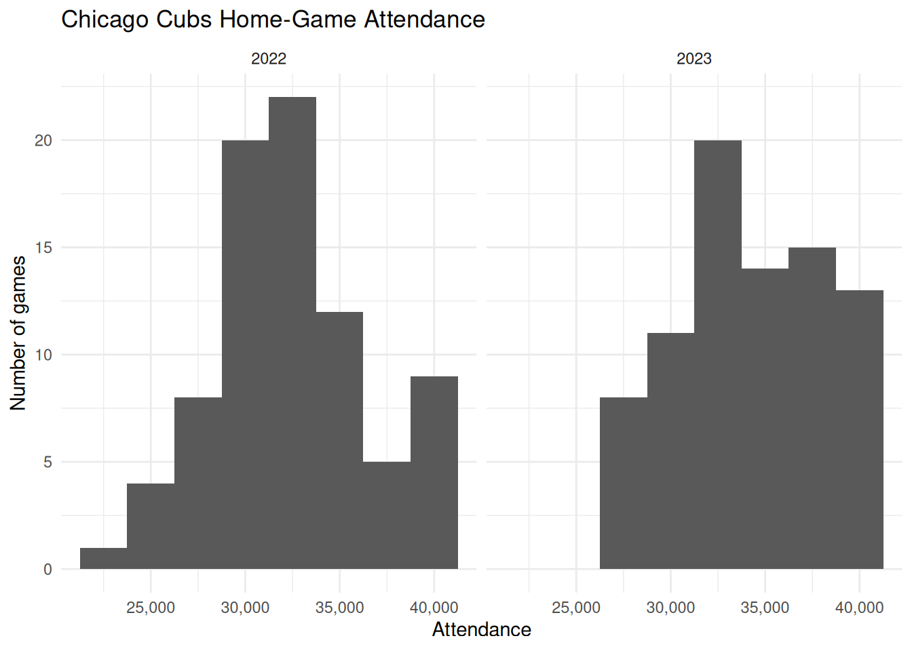

library(tidyverse)
library(scales)
library(lubridate)
library(yardstick)10 Forming and Evaluating Data-Driven Predictions
TipLearning Goals
By the end of this chapter, you should be able to:
- Explain what makes a business problem a prediction problem and identify what information is available when a prediction is made.
- Construct simple prediction rules using recent historical outcomes and groups of similar observations.
- Distinguish between training data and test data, and explain why both are needed.
- Evaluate and compare prediction rules using MAE, RMSE, and MAPE, with attention to the business decision being supported.
- Explain the general workflow of predictive analysis
10.1 The Business Challenge
The Topic: Demand Forecasting for Workforce Planning
Many business decisions must be made before demand is known. Retailers decide how much stock to order, call centres decide how many staff to schedule, and restaurants decide how many employees to roster before customers arrive. Too many resources increase costs, while too few can lead to shortages, long queues, or poor service. Managers therefore need an estimate of future demand before making these decisions.
In this chapter, we focus on one part of this problem: using historical data to predict future demand.
The Setting: Attendance at Major League Baseball Games
Our setting is Major League Baseball (MLB), a professional baseball league in the United States and Canada. Each team plays some games in its own stadium. Before a home game, stadium managers need to decide how many staff to roster and how much food and drink to prepare. These decisions depend partly on how many people will attend.
Attendance is not known before the game takes place, but managers do have historical information. They know how many people attended previous home games, which opposing team will be visiting, and how attendance has varied across opponents.
Our task is:
How can we use historical attendance data to predict attendance at a future home game?
We will focus on forming and evaluating the attendance prediction. Turning that prediction into staffing and purchasing decisions is a separate problem.
What Makes This a Prediction Problem?
A prediction problem has two parts:
- an outcome that we do not yet know; and
- information that is available when we make the prediction.
Here, the unknown outcome is attendance at a future home game, while historical attendance provides information that we can use to predict it. Timing matters: we can only use information that is known when the prediction is made. For example, we know which opponent will visit before the game takes place, but we do not know how many people will attend until the game occurs.
This gives us a rule that we will use throughout the chapter:
When predicting an outcome, we can use only information that was available before that outcome occurred.
When predicting attendance at an upcoming game, for example, we can use attendance from earlier games. We cannot use attendance from that game or from games that take place later. This rule will determine how we construct our prediction rules.
NotePrediction is not explanation
Our goal in this chapter is to predict attendance, not to explain why attendance changes.
Suppose games against a particular opponent tend to have higher attendance. That pattern may help us predict attendance at a future game against the same opponent. It does not, by itself, show that playing that opponent causes attendance to increase.
For prediction, our question is narrower: does this information help us predict future attendance more accurately?
10.2 Loading the Data
R Packages for Today
We begin by loading the R packages used in this chapter.
We have used the first three packages before. The yardstick package provides functions for evaluating predictions. We will use it later when we compare our prediction rules.
Loading the Cubs Attendance Data
Our data contain Chicago Cubs home games from 2022 to 2025. We load the data from data/cubs_attendance.csv and store them as cubs_attendance.
Rows: 324 Columns: 22
── Column specification ────────────────────────────────────────────────────────
Delimiter: ","
chr (11): tm, h_a, opp, result, record, gb, win, loss, save, d_n, orig_sche...
dbl (9): gm, r, ra, inn, rank, attendance, c_li, streak, year
date (1): date
time (1): time
ℹ Use `spec()` to retrieve the full column specification for this data.
ℹ Specify the column types or set `show_col_types = FALSE` to quiet this message.cubs_attendance <-
read_csv("data/cubs_attendance.csv") |>
janitor::clean_names()We inspect the data using glimpse().
glimpse(cubs_attendance)Rows: 324
Columns: 22
$ gm <dbl> 1, 2, 3, 10, 11, 12, 13, 14, 15, 16, 23, 24, 25, 26, 27…
$ date <date> 2022-04-07, 2022-04-09, 2022-04-10, 2022-04-18, 2022-0…
$ tm <chr> "CHC", "CHC", "CHC", "CHC", "CHC", "CHC", "CHC", "CHC",…
$ h_a <chr> "H", "H", "H", "H", "H", "H", "H", "H", "H", "H", "H", …
$ opp <chr> "MIL", "MIL", "MIL", "TBR", "TBR", "TBR", "PIT", "PIT",…
$ result <chr> "W", "W", "L", "W", "L", "L", "L", "L", "W", "L", "L", …
$ r <dbl> 5, 9, 4, 4, 5, 2, 3, 2, 21, 3, 1, 3, 0, 2, 1, 9, 7, 2, …
$ ra <dbl> 4, 0, 5, 2, 6, 8, 4, 4, 0, 4, 3, 4, 7, 6, 7, 0, 0, 3, 3…
$ inn <dbl> NA, NA, NA, NA, NA, 6, NA, NA, NA, NA, NA, NA, NA, NA, …
$ record <chr> "1-0", "2-0", "2-1", "6-4", "6-5", "6-6", "6-7", "6-8",…
$ rank <dbl> 1, 1, 1, 1, 3, 3, 3, 4, 3, 4, 4, 4, 4, 4, 4, 4, 3, 4, 4…
$ gb <chr> "Tied", "Tied", "Tied", "Tied", "1.0", "2.0", "2.0", "3…
$ win <chr> "Givens", "Steele", "Cousins", "Thompson", "Fleming", "…
$ loss <chr> "Ashby", "Woodruff", "Norris", "Adam", "Steele", "Strom…
$ save <chr> "Robertson", NA, "Hader", "Robertson", "Kittredge", NA,…
$ time <time> 03:18:00, 03:28:00, 03:03:00, 02:43:00, 03:09:00, 02:0…
$ d_n <chr> "D", "D", "D", "N", "N", "N", "N", "N", "D", "D", "N", …
$ attendance <dbl> 35112, 30369, 32858, 26615, 26568, 26167, 32341, 25005,…
$ c_li <dbl> 1.00, 1.01, 1.07, 0.95, 0.97, 0.93, 0.97, 0.95, 0.88, 0…
$ streak <dbl> 1, 2, -1, 2, -1, -2, -3, -4, 1, -1, -1, -2, -3, -4, -5,…
$ orig_scheduled <chr> NA, NA, NA, NA, NA, NA, NA, NA, NA, NA, NA, NA, "2022-0…
$ year <dbl> 2022, 2022, 2022, 2022, 2022, 2022, 2022, 2022, 2022, 2…Each row represents one Cubs home game. The data include the date, opposing team (opp), whether the game was played during the day or at night (d_n), attendance, and the season (year), along with other information about the game.
We also count how many home games appear in each season.
cubs_attendance |>
count(year, name = "home_games")# A tibble: 4 × 2
year home_games
<dbl> <int>
1 2022 81
2 2023 81
3 2024 81
4 2025 8110.3 Understanding the Outcome We Want to Predict
How Is Home-Game Attendance Distributed?
Before constructing prediction rules, we first look at the outcome we want to predict: attendance at Chicago Cubs home games.
We start with the 2022 and 2023 seasons and compare their attendance distributions.
cubs_attendance |>
filter(year %in% c(2022, 2023)) |>
ggplot(aes(x = attendance)) +
geom_histogram(binwidth = 2500) +
facet_wrap(~ year) +
scale_x_continuous(labels = scales::comma) +
labs(
title = "Chicago Cubs Home-Game Attendance",
x = "Attendance",
y = "Number of games"
) +
theme_minimal()
The two seasons cover a similar overall range, from roughly the mid-20,000s to around 40,000 attendees, but the distributions differ within that range. Attendance in 2022 is more concentrated around 30,000–35,000, while 2023 has more games spread across the upper part of the distribution.
Attendance also varies substantially from game to game within each season. This gives us something to predict. Rather than using the same attendance forecast for every game, we can ask whether information from previous games helps us anticipate which games will have higher or lower attendance.
The upper end of both distributions also stops at around the same level. This reflects a feature of the setting: stadium attendance cannot exceed the number of people the stadium can hold.
5 min
Using the two histograms:
- What range of attendance is common across the two seasons?
- How does the shape of the attendance distribution differ between 2022 and 2023?
- What do you notice about the upper end of the distributions?
- Why does the variation across games give us a reason to build prediction rules?
Comparing the two histograms lets us see whether attendance falls within a similar range across seasons and whether the overall shape of the distribution changes much from one year to the next.
Attendance also varies from game to game within each season. If that variation can be predicted using information from earlier games or other game characteristics, then a single forecast for every game can be improved upon.
Attendance has a natural upper bound: a stadium can hold only a fixed number of people. We should therefore also look for signs that attendance becomes compressed near its upper end.
10.4 Training Data and Test Data
Why Do We Need Separate Training and Test Data?
Suppose we want to predict attendance at future Cubs games. We might try several prediction rules, compare how well they work on the historical games, and keep the rule that performs best. If we then use those same historical games to report how accurate our chosen rule is, we have a problem: the historical outcomes helped us decide which rule to keep. The selected rule may therefore look especially good on those particular games, even if it does not perform as well on new games.
What we really want to know is whether the rule can predict observations that played no role in choosing it. To answer that question, we divide the data into two parts. The training data are the observations we use to develop, compare, and choose prediction rules. The test data are observations kept separate during model development and used only at the end to evaluate how well the chosen rules perform on new data.
For this chapter, we use:
- Training data: Cubs home games from 2022–2024
- Test data: Cubs home games from 2025
The logic is simple: use the earlier seasons to develop the prediction rules, then evaluate those rules on a later season that played no role in choosing them.
cubs_train <-
cubs_attendance |>
filter(year <= 2024)
cubs_test <-
cubs_attendance |>
filter(year == 2025)We can check how many games are available in each dataset.
nrow(cubs_train)[1] 243nrow(cubs_test)[1] 81For now, we work only with cubs_train. We will use those games to build and compare several candidate prediction rules. We will return to cubs_test only after those rules have been developed, so the 2025 games can show how well the rules perform on data that played no role in selecting them.
WarningA Simplified Test-Set Design
In this chapter, we keep the 2025 test data completely separate from the 2022–2024 training data.
A more realistic forecasting system might update predictions during 2025 as new game outcomes become available. For example, attendance at an early-season game could be used when predicting a later game.
We will not do that here. Keeping the training period fixed makes the training/test distinction easier to see and avoids complicating the code further.
10.5 Forming Simple Predictions
Starting Simple: Use the Previous Home Game
We begin with a simple prediction rule: predict attendance at the next Cubs home game using attendance at the previous home game in the same season. The idea is that recent attendance may contain useful information about near-term demand. If the previous home game drew 35,000 people, our prediction for the next home game is 35,000.
For game (t), this rule is:
\[ \widehat{A}_t = A_{t-1} \]
where (A_t) is attendance at game (t) and (_t) is our prediction for that game.
We can construct this prediction with lag(). We first order games within each season, then create a new variable containing attendance at the previous home game.
cubs_train <-
cubs_train |>
arrange(year, gm) |>
group_by(year) |>
mutate(
pred_lag1 = lag(attendance, 1)
) |>
ungroup()Because we calculate the lag separately within each season, the first home game of each year has no previous home game to use. Its pred_lag1 value is therefore NA. This is not an error: the information required by the prediction rule is not yet available.
What About Two Games Ago?
Recent information may be useful, but we do not yet know how quickly that information becomes less helpful. A second prediction rule uses attendance from two home games earlier:
\[ \widehat{A}_t = A_{t-2} \]
We add this prediction using a two-game lag.
cubs_train <-
cubs_train |>
arrange(year, gm) |>
group_by(year) |>
mutate(
pred_lag2 = lag(attendance, 2)
) |>
ungroup()Now the first two home games of each season have no pred_lag2 value. Again, this follows directly from the rule: before the third home game, there is no attendance observation from two home games earlier.
We can inspect the actual attendance and both predictions side by side.
cubs_train |>
select(year, gm, date, attendance, pred_lag1, pred_lag2) |>
slice_head(n = 10)# A tibble: 10 × 6
year gm date attendance pred_lag1 pred_lag2
<dbl> <dbl> <date> <dbl> <dbl> <dbl>
1 2022 1 2022-04-07 35112 NA NA
2 2022 2 2022-04-09 30369 35112 NA
3 2022 3 2022-04-10 32858 30369 35112
4 2022 10 2022-04-18 26615 32858 30369
5 2022 11 2022-04-19 26568 26615 32858
6 2022 12 2022-04-20 26167 26568 26615
7 2022 13 2022-04-21 32341 26167 26568
8 2022 14 2022-04-22 25005 32341 26167
9 2022 15 2022-04-23 39917 25005 32341
10 2022 16 2022-04-24 28387 39917 25005At this point, we have two plausible prediction rules. Looking at the predicted values alone does not tell us which rule performs better. To compare them, we need to measure how far each prediction is from the attendance that actually occurred.
10.6 Evaluating Predictions During Model Development
Predictions Are Not Enough
We now have two ways to predict attendance: use the previous home game or use the home game two games earlier. Looking at the predicted values alone does not tell us which rule works better. We need to compare each prediction with the attendance that actually occurred.
For game (t), define the prediction error as:
\[ e_t = A_t - \widehat{A}_t \]
where (A_t) is actual attendance and (_t) is predicted attendance. A positive error means the prediction was too low, while a negative error means it was too high. An error of zero would be a perfect prediction.
We can inspect a few errors from our two lagged prediction rules.
cubs_train |>
select(year, gm, attendance, pred_lag1, pred_lag2) |>
filter(!is.na(pred_lag1), !is.na(pred_lag2)) |>
mutate(
error_lag1 = attendance - pred_lag1,
error_lag2 = attendance - pred_lag2
) |>
slice_head(n = 10)# A tibble: 10 × 7
year gm attendance pred_lag1 pred_lag2 error_lag1 error_lag2
<dbl> <dbl> <dbl> <dbl> <dbl> <dbl> <dbl>
1 2022 3 32858 30369 35112 2489 -2254
2 2022 10 26615 32858 30369 -6243 -3754
3 2022 11 26568 26615 32858 -47 -6290
4 2022 12 26167 26568 26615 -401 -448
5 2022 13 32341 26167 26568 6174 5773
6 2022 14 25005 32341 26167 -7336 -1162
7 2022 15 39917 25005 32341 14912 7576
8 2022 16 28387 39917 25005 -11530 3382
9 2022 23 34206 28387 39917 5819 -5711
10 2022 24 36755 34206 28387 2549 8368Individual errors are useful, but we need a summary measure to compare prediction rules across many games. Different measures answer slightly different questions, so we will use three.
The Mean Absolute Error (MAE) measures the average size of the prediction errors, ignoring whether the prediction was too high or too low:
\[ \mathrm{MAE} = \frac{1}{T} \sum_{t=1}^{T} |e_t| \]
Because MAE is measured in the same units as attendance, it has a direct interpretation. An MAE of 2,000 means that predictions miss actual attendance by 2,000 people on average.
The Root Mean Squared Error (RMSE) gives more weight to large prediction errors:
\[ \mathrm{RMSE} = \sqrt{ \frac{1}{T} \sum_{t=1}^{T} e_t^2 } \]
RMSE is also measured in people. Compared with MAE, it increases more when a prediction rule makes a few large mistakes.
The Mean Absolute Percentage Error (MAPE) measures the size of each error relative to actual attendance:
\[ \mathrm{MAPE} = \frac{100}{T} \sum_{t=1}^{T} \left| \frac{e_t}{A_t} \right| \]
MAPE expresses prediction errors as percentages. This can make performance easier to compare across outcomes measured on different scales. In our attendance data, actual attendance is always well above zero, so the denominator does not create a problem.
NoteTraining Performance Is Not Final Test Performance
We are calculating these metrics using the training data because they help us develop and compare candidate prediction rules. They do not tell us how well the rules will perform on the 2025 test data.
We will use the test data only after we have finished developing our candidate rules.
Comparing Lag 1 and Lag 2
For a fair comparison, both rules should be evaluated on the same games. Because lag 2 has no prediction for the first two home games of each season, we keep only games for which both lagged predictions are available.
We first reshape the two prediction columns into a format where each row contains one actual attendance value and one prediction.
training_predictions <-
cubs_train |>
filter(
!is.na(pred_lag1),
!is.na(pred_lag2)
) |>
select(attendance, pred_lag1, pred_lag2) |>
pivot_longer(
cols = starts_with("pred_"),
names_to = "model",
values_to = ".pred"
)
head(training_predictions)# A tibble: 6 × 3
attendance model .pred
<dbl> <chr> <dbl>
1 32858 pred_lag1 30369
2 32858 pred_lag2 35112
3 26615 pred_lag1 32858
4 26615 pred_lag2 30369
5 26568 pred_lag1 26615
6 26568 pred_lag2 32858We can now use functions from yardstick to calculate MAE, RMSE, and MAPE for each rule.
training_metrics <-
training_predictions |>
group_by(model) |>
summarise(
mae = mae_vec(attendance, .pred),
rmse = rmse_vec(attendance, .pred),
mape = mape_vec(attendance, .pred)
)
training_metrics# A tibble: 2 × 4
model mae rmse mape
<chr> <dbl> <dbl> <dbl>
1 pred_lag1 3209. 4183. 9.60
2 pred_lag2 3955. 5068. 11.8 For all three metrics, lower values indicate predictions that are closer to the actual attendance. Lag 1 performs better on all three metrics. Its MAE is about 3,209 fans, compared with 3,955 for lag 2, so using the previous home game reduces the typical prediction error by about 750 fans, or 19%. Lag 1 also has a lower RMSE (4,183 versus 5,068) and MAPE (9.6% versus 11.8%). Within the training data, attendance at the most recent home game therefore provides a better prediction than attendance two home games earlier.
Now that we have a way to compare candidate prediction rules, we can ask whether other ways of using historical attendance produce better predictions.
10.7 Combining Recent Information
A Two-Game Trailing Mean
So far, each prediction has used attendance from a single earlier home game. We can also combine information from several recent games into one prediction. One simple approach is to average attendance from the previous two home games.
For game (t), the two-game trailing mean is:
\[ \widehat{A}_t = \frac{A_{t-1} + A_{t-2}}{2} \]
This rule gives equal weight to the previous two home games. If those games drew 32,000 and 36,000 people, the prediction for the next home game would be 34,000.
We construct this prediction within each season:
cubs_train <-
cubs_train |>
arrange(year, gm) |>
group_by(year) |>
mutate(
pred_trailing2 =
(lag(attendance, 1) + lag(attendance, 2)) / 2
) |>
ungroup()
cubs_train |>
select(gm, date, attendance, pred_trailing2)# A tibble: 243 × 4
gm date attendance pred_trailing2
<dbl> <date> <dbl> <dbl>
1 1 2022-04-07 35112 NA
2 2 2022-04-09 30369 NA
3 3 2022-04-10 32858 32740.
4 10 2022-04-18 26615 31614.
5 11 2022-04-19 26568 29736.
6 12 2022-04-20 26167 26592.
7 13 2022-04-21 32341 26368.
8 14 2022-04-22 25005 29254
9 15 2022-04-23 39917 28673
10 16 2022-04-24 28387 32461
# ℹ 233 more rowsThe first two home games of each season have no pred_trailing2 value because the rule requires attendance from two earlier home games.
Comparing Recent-History Prediction Rules
We now have three ways to use recent attendance:
pred_lag1uses the previous home game;pred_lag2uses the home game two games earlier;pred_trailing2averages the previous two home games.
The third rule introduces a new idea: a prediction can combine information from multiple historical observations rather than rely on a single one.
To compare the three rules fairly, we evaluate them on the same games. Since both pred_lag2 and pred_trailing2 are unavailable for the first two home games of each season, we keep only games for which all three predictions are available.
recent_history_predictions <-
cubs_train |>
filter(
!is.na(pred_lag1),
!is.na(pred_lag2),
!is.na(pred_trailing2)
) |>
select(
attendance,
pred_lag1,
pred_lag2,
pred_trailing2
) |>
pivot_longer(
cols = starts_with("pred_"),
names_to = "model",
values_to = ".pred"
)We then calculate the same three error metrics as before.
recent_history_metrics <-
recent_history_predictions |>
group_by(model) |>
summarise(
mae = mae_vec(attendance, .pred),
rmse = rmse_vec(attendance, .pred),
mape = mape_vec(attendance, .pred)
)
recent_history_metrics# A tibble: 3 × 4
model mae rmse mape
<chr> <dbl> <dbl> <dbl>
1 pred_lag1 3209. 4183. 9.60
2 pred_lag2 3955. 5068. 11.8
3 pred_trailing2 3214. 4123. 9.58The two-game trailing mean performs almost identically to lag 1 on MAE and MAPE, but has a slightly lower RMSE. This suggests that combining multiple recent games can be useful because it makes the prediction less sensitive to any one unusually high or low attendance outcome. At the same time, the gains are modest: using more historical observations does not automatically improve prediction.
10.8 Using More Relevant Historical Games
Predicting Attendance by Opponent
So far, we have chosen historical games because they happened recently. Another possibility is to use past games that are similar to the game we want to predict. One feature we know before a game is the opposing team.
Suppose we want to predict attendance for a 2024 home game against Milwaukee. Rather than use attendance from the most recent Cubs home game, we could look at Cubs home games against Milwaukee in 2023 and use their average attendance. The prediction rule is then: for each opponent, predict attendance using the average attendance from games against that opponent in the previous season.
We can first construct these opponent averages for 2023.
opp_means_2023 <-
cubs_train |>
filter(year == 2023) |>
group_by(opp) |>
summarise(
pred_opp_1yr = mean(attendance, na.rm = TRUE),
.groups = "drop"
)We then attach the appropriate opponent average to each 2024 game.
opp_predictions_2024 <-
cubs_train |>
filter(year == 2024) |>
left_join(
opp_means_2023,
by = "opp"
)Games against the same opponent receive the same prediction because the rule uses the same historical group to predict each of them. If an opponent did not appear in the historical data used by the rule, the prediction will be NA.
Reusing the Same Prediction Logic
We may also want to use more than one previous season. For example, we could predict 2024 attendance using average attendance against each opponent across both 2022 and 2023. The steps are almost identical: choose the historical years, calculate an average for each opponent, and join those averages to the games we want to predict.
When the same analytical steps need to be repeated with different inputs, a function can help us avoid rewriting the same code. The function below takes three inputs: the data, the year we want to predict, and the number of previous years to use.
predict_by_opponent <- function(data, target_year, years_back) {
opponent_means <-
data |>
filter(
year >= target_year - years_back,
year < target_year
) |>
group_by(opp) |>
summarise(
.pred = mean(attendance, na.rm = TRUE),
.groups = "drop"
)
data |>
filter(year == target_year) |>
left_join(
opponent_means,
by = "opp"
)
}The function does the same two things we did manually above. First, it calculates average attendance by opponent over the requested historical window. Second, it joins those averages to the games in the target year.
We can now create a one-year and a two-year opponent prediction for 2024 by changing only years_back.
opp_1yr_2024 <-
predict_by_opponent(
data = cubs_train,
target_year = 2024,
years_back = 1
) |>
rename(pred_opp_1yr = .pred)
opp_2yr_2024 <-
predict_by_opponent(
data = cubs_train,
target_year = 2024,
years_back = 2
) |>
rename(pred_opp_2yr = .pred)The one-year rule uses only 2023 games to predict 2024. The two-year rule uses games from 2022 and 2023. Combining two seasons gives each opponent mean more historical observations, which may make the prediction less sensitive to an unusual game. The trade-off is that some of those observations are older and may be less representative of current attendance.
5 min
Consider the two opponent-based prediction rules.
- What historical games are used when
target_year = 2024andyears_back = 1? - What changes when
years_back = 2? - Why might using two years produce a more stable prediction?
- Why might using older games make the prediction less useful?
10.9 Comparing Candidate Prediction Rules
Evaluating the Rules on the Training Data
We now have five candidate prediction rules. Three use recent attendance (pred_lag1, pred_lag2, and pred_trailing2), while two use average attendance against the same opponent (pred_opp_1yr and pred_opp_2yr).
Before moving to the 2025 test data, we compare all five rules on 2024 games. We use 2024 because every rule can be constructed using information from earlier games or earlier seasons. This lets us compare the rules on a common year while still treating the exercise as part of model development.
We already created each prediction in the previous sections, so we do not need to run the models again. We can bring the predictions together in one data frame.
candidate_predictions_2024 <-
cubs_train |>
filter(year == 2024) |>
select(
year,
gm,
date,
opp,
attendance,
pred_lag1,
pred_lag2,
pred_trailing2
) |>
left_join(
opp_1yr_2024 |>
select(year, gm, pred_opp_1yr),
by = c("year", "gm")
) |>
left_join(
opp_2yr_2024 |>
select(year, gm, pred_opp_2yr),
by = c("year", "gm")
)For a fair comparison, every rule should be evaluated on the same games. We therefore keep only games for which all five predictions are available, then reshape the data so that each row contains one actual attendance value and one prediction.
candidate_predictions_long <-
candidate_predictions_2024 |>
drop_na(starts_with("pred_")) |>
pivot_longer(
cols = starts_with("pred_"),
names_to = "model",
values_to = ".pred"
)We can now calculate MAE, RMSE, and MAPE for each rule using the same workflow as before.
candidate_metrics <-
candidate_predictions_long |>
group_by(model) |>
summarise(
mae = mae_vec(attendance, .pred),
rmse = rmse_vec(attendance, .pred),
mape = mape_vec(attendance, .pred)
)
candidate_metrics# A tibble: 5 × 4
model mae rmse mape
<chr> <dbl> <dbl> <dbl>
1 pred_lag1 2909. 3916. 8.24
2 pred_lag2 3375. 4697. 9.61
3 pred_opp_1yr 3745. 4477. 10.3
4 pred_opp_2yr 4263. 4964. 11.5
5 pred_trailing2 2669. 3774. 7.57On the 2024 training data, the two-game trailing mean performs best overall. It has the lowest MAE (2,669), RMSE (3,774), and MAPE (7.57%). Lag 1 is the next-best rule, while lag 2 performs worse on all three metrics. The opponent-based rules perform worse than the recent-history rules, and using two years of opponent history performs worse than using only the previous year. In this training sample, then, recent attendance appears more useful than opponent-specific history. These results help us identify promising rules, but they are still based on the data used during model development.
10.10 Evaluating Predictions on Unseen Data
Moving from Training to Test Data
So far, we used the training data to compare the candidate rules and learn which ones looked promising, so strong performance on those same games may not carry over to a new season. The 2025 test data give us a fresh comparison. These games played no role in developing or selecting the candidate rules. We can therefore use them to ask whether the patterns that looked useful during training also produce accurate predictions for new games.
Applying the Recent-History Rules to 2025
For the lag-based rules, earlier 2025 games can be used to predict later 2025 games. Once a game has occurred, its attendance is known and is therefore available when predicting the next game. What we cannot use is attendance from the game being predicted or from any game that takes place later.
We apply the same three recent-history rules to the 2025 games.
cubs_test_predictions <-
cubs_test |>
arrange(gm) |>
mutate(
pred_lag1 = lag(attendance, 1),
pred_lag2 = lag(attendance, 2),
pred_trailing2 =
(lag(attendance, 1) + lag(attendance, 2)) / 2
)As before, the first game has no lag-1 prediction, while the first two games have no lag-2 or trailing-2 prediction.
Applying the Opponent Rules to 2025
The opponent-based rules use historical averages calculated from seasons before the year being predicted. We use the function from the previous section to create one-year and two-year opponent predictions for 2025.
opp_1yr_2025 <-
predict_by_opponent(
data = cubs_attendance,
target_year = 2025,
years_back = 1
) |>
rename(pred_opp_1yr = .pred)
opp_2yr_2025 <-
predict_by_opponent(
data = cubs_attendance,
target_year = 2025,
years_back = 2
) |>
rename(pred_opp_2yr = .pred)The one-year rule uses 2024 attendance against each opponent. The two-year rule uses 2023 and 2024. Unlike the lagged rules, these opponent averages are not updated using 2025 attendance.
We now bring all five predictions together.
test_predictions_2025 <-
cubs_test_predictions |>
left_join(
opp_1yr_2025 |>
select(year, gm, pred_opp_1yr),
by = c("year", "gm")
) |>
left_join(
opp_2yr_2025 |>
select(year, gm, pred_opp_2yr),
by = c("year", "gm")
)Comparing Test-Set Performance
For a fair comparison, we again evaluate every rule on the same games. We keep only games for which all five predictions are available, reshape the predictions into long format, and calculate the same three error metrics.
test_predictions_long <-
test_predictions_2025 |>
drop_na(starts_with("pred_")) |>
pivot_longer(
cols = starts_with("pred_"),
names_to = "model",
values_to = ".pred"
)
test_metrics <-
test_predictions_long |>
group_by(model) |>
summarise(
mae = mae_vec(attendance, .pred),
rmse = rmse_vec(attendance, .pred),
mape = mape_vec(attendance, .pred)
)
test_metrics# A tibble: 5 × 4
model mae rmse mape
<chr> <dbl> <dbl> <dbl>
1 pred_lag1 2681. 3863. 7.43
2 pred_lag2 3383. 4446. 9.46
3 pred_opp_1yr 2806. 3565. 7.67
4 pred_opp_2yr 3059. 3763. 8.21
5 pred_trailing2 2767. 3687. 7.70Which Prediction Rule Is Best?
There is no single prediction rule that performs best on every metric. Lag 1 has the lowest MAE (2,681) and MAPE (7.43%), while the one-year opponent model has the lowest RMSE (3,565). The two-game trailing mean is also competitive, but it is no longer the best-performing rule on the test data.
Which result matters most depends on the business decision. In our setting, MAE is a natural primary measure because it tells us the typical prediction error in number of attendees — the same quantity that drives staffing and supply decisions. By that measure, lag 1 performs best: its predictions miss actual attendance by about 2,681 people on average.
RMSE is also useful because it places more weight on unusually large prediction errors. If large mistakes are especially costly — for example, because severe understaffing creates long queues or shortages — the one-year opponent model may be more attractive because it has the lowest RMSE. MAPE gives a useful percentage interpretation, but adds less here because attendance is measured on a similar scale across games.
The test results also change what we learned during model development. On the 2024 training data, the two-game trailing mean performed best on all three metrics. In 2025, the ranking depends on how prediction error is measured. This is why we needed the test data: the patterns that look strongest during model development do not always remain strongest when applied to new observations.
10.11 Summary
In this chapter, we treated stadium attendance as a prediction problem. We used historical games to construct several prediction rules, including lags, an average of recent games, and averages based on the opposing team. We compared those rules during model development and then evaluated them on a later season that played no role in choosing them.
The results highlighted several lessons. Recent information can be useful, but combining more observations does not automatically improve prediction. Historical observations can also be selected because they are similar to the case we want to predict, not just because they are recent. Training performance helps us compare candidate rules, but test performance tells us whether those patterns continue to hold for new observations. We also saw that there may be no single best rule across every error metric, so the choice of metric should reflect the business decision the prediction will support.
The specific prediction rules in this chapter are simple, but the logic is general. In later courses or applications, you may encounter methods that combine many variables and capture patterns that cannot be summarized well by a few lags, averages, or group means. The machinery may become more complicated, but the core workflow remains the same: define the outcome, use only information available when the prediction is made, develop candidate rules using historical data, and evaluate them on observations that played no role in choosing those rules.